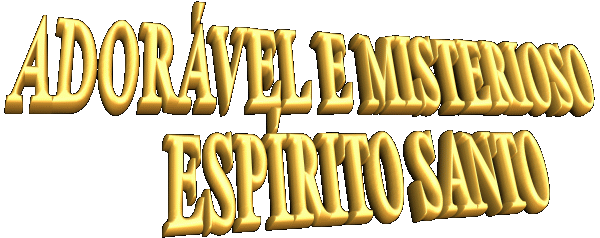
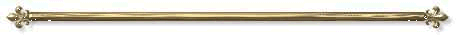

"Apresenta a Face do ESPÍRITO DE DEUS, realçando o imenso e paternal amor Divino que guia, ilumina, infunde carismas, protege, dá a vida e santifica a humanidade, a fim de que todos realizem com perfeição e amor, a missão de sua vida."

NOSSA SENHORA e o ESPÍRITO SANTO
Pecado Imperdoável contra o ESPÍRITO SANTO
